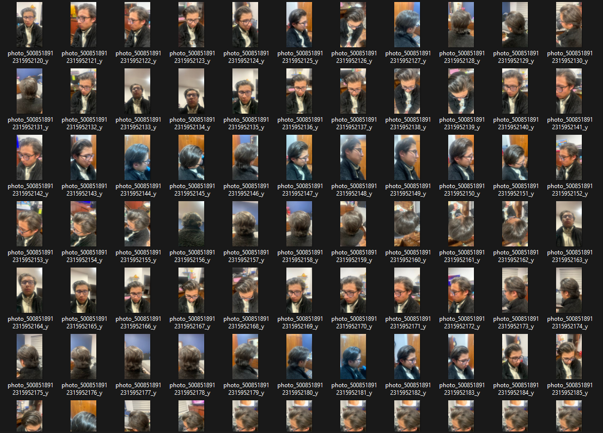
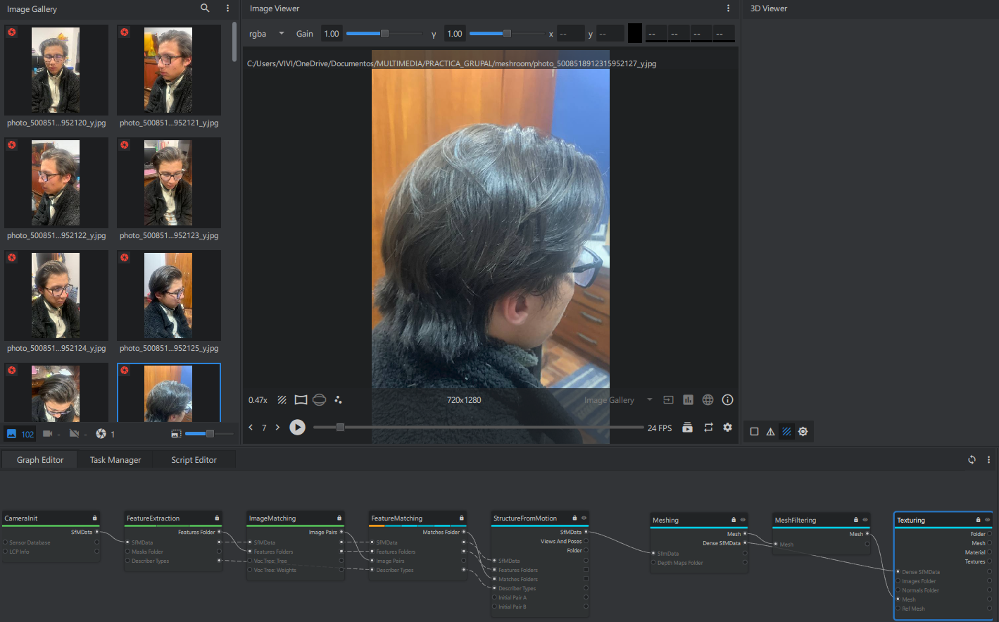
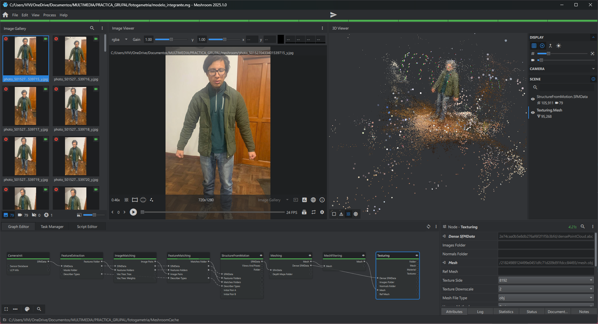
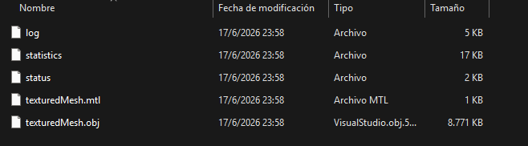

Proceso seguido para obtener un modelo 3D a partir de fotografías utilizando Meshroom.

Se tomaron varias fotografías del integrante desde diferentes ángulos alrededor de la persona. Estas imágenes servirán como base para generar el modelo 3D.

Las fotografías se importaron en Meshroom. El programa analiza las imágenes, identifica puntos en común y calcula la posición de cada fotografía para reconstruir la escena.

Meshroom procesa la información obtenida de las fotografías para construir la forma tridimensional del modelo. Debido a las limitaciones de hardware disponibles, algunas etapas avanzadas del proceso no pudieron completarse correctamente.

Una vez finalizado el procesamiento, el modelo puede exportarse en formato .obj para ser utilizado posteriormente en otros programas de modelado o motores gráficos.